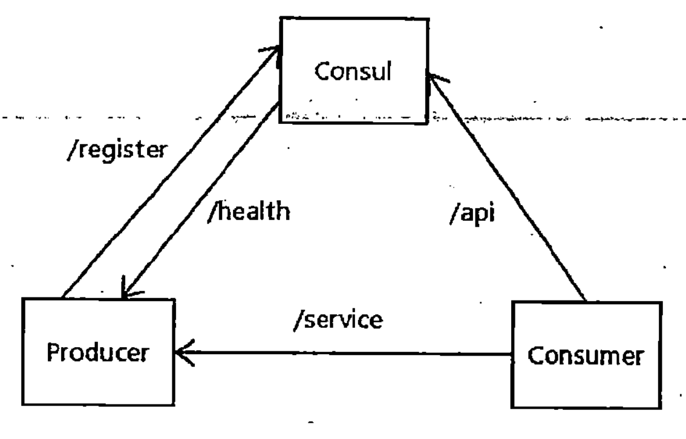
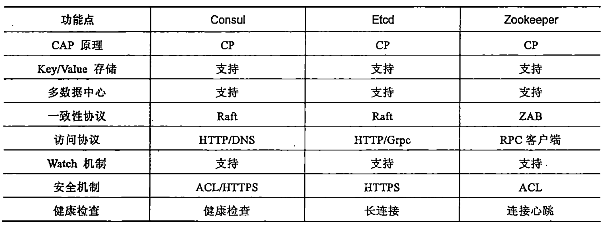
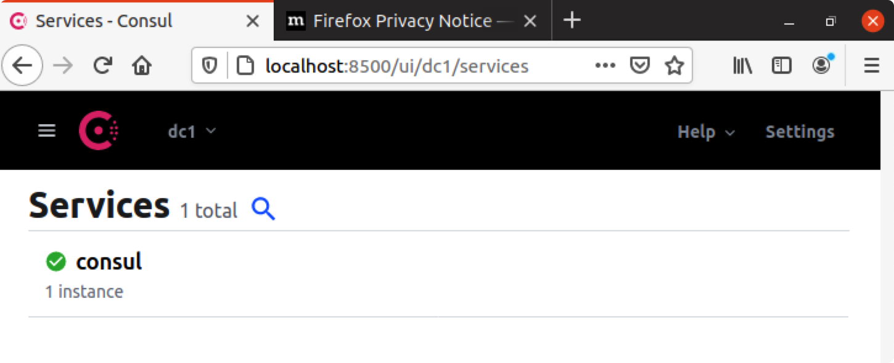
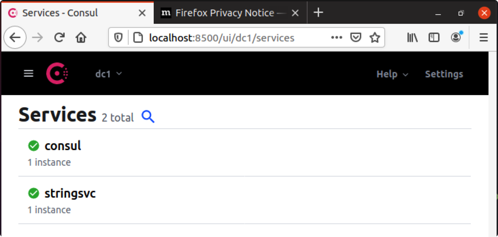
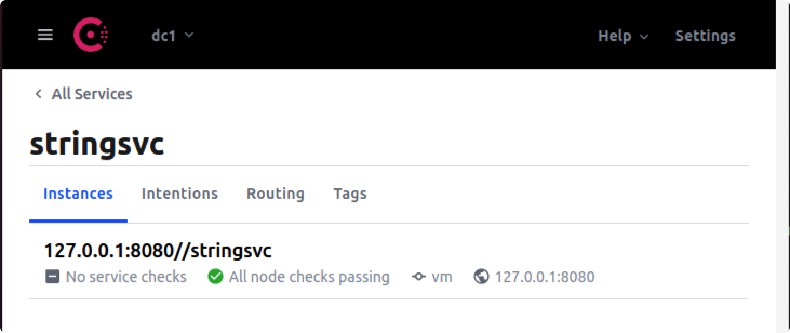

Go Kit 官方示例学习及其 API Gateway 实现

目录
该文是Go kit 官方示例的学习笔记，并总结了结合stringsvc实现 API Gateway 的方法
一，StringSvc1（基本框架）
1，业务逻辑
- 业务逻辑以服务方式存在，在gokit中，一个服务首先定义为一个interface。例如，定义服务 StringService 如下：
// StringService provides operations on strings.
import "context"
// 服务接口
type StringService interface {
Uppercase(string) (string, error)
Count(string) int
}
- 同时需要定义该 interface 的实现对象
// 服务对象
type stringService struct{}
// 服务实现
func (stringService) Uppercase(s string) (string, error) {
if s == "" {
return "", ErrEmpty
}
return strings.ToUpper(s), nil
}
// ErrEmpty is returned when input string is empty
var ErrEmpty = errors.New("Empty string")
2，请求与响应
- 在Go kit中，首选的消息通信模式是 RPC。因此，服务接口中的每个方法会对应一个RPC调用方法。这样，我们需要定义这些方法的请求与响应参数结构。例如：
// 请求
type uppercaseRequest struct {
S string `json:"s"`
}
// 响应
type uppercaseResponse struct {
V string `json:"v"`
Err string `json:"err,omitempty"` // errors don't JSON-marshal, so we use a string
}
3，Endpoints
- Go kit通过一个称为 endpoint 的抽象概念来提供服务功能
- 一个 endpoint 代表了一个rpc，也就对应与服务 interface 中的方法，其定义方式如下：
type Endpoint func(ctx context.Context, request interface{}) (response interface{}, err error)
- 我们需要编写一个适配器函数，将interface中的方法转换成一个endpoint。例如：
import (
"context"
"github.com/go-kit/kit/endpoint"
)
// 适配器
func makeUppercaseEndpoint(svc StringService) endpoint.Endpoint {
return func(_ context.Context, request interface{}) (interface{}, error) {
req := request.(uppercaseRequest)
v, err := svc.Uppercase(req.S)
if err != nil {
return uppercaseResponse{v, err.Error()}, nil
}
return uppercaseResponse{v, ""}, nil
}
}
4，Transports
- 为了可以从外部调用这些服务，我们需要将其以某种传输协议（Transport）暴露出去。Go kit 支持多种传输协议，包括http, grpc 等等。
- 针对StringService服务，我们选择 Json over HTTP 协议，将其暴露出去。Go kit 提供了transport包，方便实现。例如：
import (
"context"
"encoding/json"
"log"
"net/http"
// gokit 提供的transport工具包
httptransport "github.com/go-kit/kit/transport/http"
)
func main() {
svc := stringService{}
uppercaseHandler := httptransport.NewServer(
makeUppercaseEndpoint(svc),
decodeUppercaseRequest,
encodeResponse,
)
http.Handle("/uppercase", uppercaseHandler)
http.Handle("/count", countHandler)
log.Fatal(http.ListenAndServe(":8080", nil))
}
func decodeUppercaseRequest(_ context.Context, r *http.Request) (interface{}, error) {
var request uppercaseRequest
if err := json.NewDecoder(r.Body).Decode(&request); err != nil {
return nil, err
}
return request, nil
}
func encodeResponse(_ context.Context, w http.ResponseWriter, response interface{}) error {
return json.NewEncoder(w).Encode(response)
}
5，测试
cd stringsvc1
go run main.go
curl -XPOST -d '{"s": "hello, world"}' localhost:8080/uppercase
{"v":"HELLO, WORLD"}
二，StringSvc2（中间件）
一个具备产品标准的服务，必须提供日志和度量机制。
1，关注点分离
- 随着服务端口的不断增多，需要采用分层分解思想将这些代码进行组织。以stringsvc1的分解为例，我们需要作如下调整。
- 将 services 分离到 service.go 文件中
type StringService
type stringService
func Uppercase
var ErrEmpty
// ServiceMiddleware is a chainable behavior modifier for StringService.
type ServiceMiddleware func(StringService) StringService
- 将 transports 分离到 transport.go 文件中
func makeUppercaseEndpoint
func decodeUppercaseRequest
func encodeResponse
type uppercaseRequest
type uppercaseResponse
2，Transport Logging
每个组件应当将 logger 作为一个依赖组件，不同的组件可以采用不同的 logger。我们可以为不同组件创建不同的logger，并将其传递给该组件，这称为“依赖注入”。不建议采用全局范围的 logger。
Go kit 采用了一种称为中间件(middleware)的思路实现这种“依赖注入”。
- 一个 middleware 是定义为以下形式的函数
type Middleware func(Endpoint) Endpoint
- 你可以在 middleware 中加入日志处理（引入日志模块），实现依赖注入。例如：
func loggingMiddleware(logger log.Logger) Middleware {
return func(next endpoint.Endpoint) endpoint.Endpoint {
return func(ctx context.Context, request interface{}) (interface{}, error) {
logger.Log("msg", "calling endpoint")
defer logger.Log("msg", "called endpoint")
return next(ctx, request)
}
}
}
- 通过一个 middleware 可以实现针对一个 endpoint 的进一步依赖注入，将外部服务传入到该endpoint
logger := log.NewLogfmtLogger(os.Stderr)
svc := stringService{}
var uppercase endpoint.Endpoint
uppercase = makeUppercaseEndpoint(svc)
// 实现依赖注入
uppercase = loggingMiddleware(log.With(logger, "method", "uppercase"))(uppercase)
uppercaseHandler := httptransport.NewServer(
uppercase,
// ...
)
3，Application Logging
- 应用（服务）范围的依赖注入方法，可以定义一个 Middleware 对象，用于封装针对的 service 接口。例如，我们定义针对 StringService 的Middleware 对象如下：
type loggingMiddleware struct {
logger log.Logger
next StringService
}
func (mw loggingMiddleware) Uppercase(s string) (output string, err error) {
defer func(begin time.Time) {
mw.logger.Log(
"method", "uppercase",
"input", s,
"output", output,
"err", err,
"took", time.Since(begin),
)
}(time.Now())
output, err = mw.next.Uppercase(s)
return
}
- 然后，应用该middleware 如下：
import (
"os"
"github.com/go-kit/kit/log"
httptransport "github.com/go-kit/kit/transport/http"
)
func main() {
logger := log.NewLogfmtLogger(os.Stderr)
var svc StringService
svc = stringService{}
svc = loggingMiddleware{logger, svc}
// ...
uppercaseHandler := httptransport.NewServer(
makeUppercaseEndpoint(svc),
// ...
)
}
- Go kit 提供的 Middleware 分为（根据范围）以下几种：
- Endpoint middleware，关注传输层（transport），例如熔断处理、限流处理等
- Service middleware，关注业务层（service），例如日志，度量等等
4，Application 设施
In Go kit, instrumentation means using package metrics to record statistics about your service’s runtime behavior. Counting the number of jobs processed, recording the duration of requests after they’ve finished, and tracking the number of in-flight operations would all be considered instrumentation.
在Go kit中，Application Instrumentation是指服务运行时行为的度量统计，包括任务处理数量，请求完成时间，在线操作的跟踪等等操作。Go kit采用service middleware的方法处理Application Instrumentation。例如：
type instrumentingMiddleware struct {
requestCount metrics.Counter
requestLatency metrics.Histogram
next StringService
}
func (mw instrumentingMiddleware) Uppercase(s string) (output string, err error) {
defer func(begin time.Time) {
lvs := []string{"method", "uppercase", "error", fmt.Sprint(err != nil)}
mw.requestCount.With(lvs...).Add(1)
mw.requestLatency.With(lvs...).Observe(time.Since(begin).Seconds())
}(time.Now())
output, err = mw.next.Uppercase(s)
return
}
然后，将其应用到服务中，如下：
import (
stdprometheus "github.com/prometheus/client_golang/prometheus"
kitprometheus "github.com/go-kit/kit/metrics/prometheus"
"github.com/go-kit/kit/metrics"
)
func main() {
logger := log.NewLogfmtLogger(os.Stderr)
fieldKeys := []string{"method", "error"}
requestCount := kitprometheus.NewCounterFrom(stdprometheus.CounterOpts{
Namespace: "my_group",
Subsystem: "string_service",
Name: "request_count",
Help: "Number of requests received.",
}, fieldKeys)
requestLatency := kitprometheus.NewSummaryFrom(stdprometheus.SummaryOpts{
Namespace: "my_group",
Subsystem: "string_service",
Name: "request_latency_microseconds",
Help: "Total duration of requests in microseconds.",
}, fieldKeys)
countResult := kitprometheus.NewSummaryFrom(stdprometheus.SummaryOpts{
Namespace: "my_group",
Subsystem: "string_service",
Name: "count_result",
Help: "The result of each count method.",
}, []string{}) // no fields here
var svc StringService
svc = stringService{}
svc = loggingMiddleware{logger, svc}
// 应用 application instrumentation
svc = instrumentingMiddleware{requestCount, requestLatency, countResult, svc}
uppercaseHandler := httptransport.NewServer(
makeUppercaseEndpoint(svc),
decodeUppercaseRequest,
encodeResponse,
)
http.Handle("/uppercase", uppercaseHandler)
http.Handle("/metrics", promhttp.Handler())
logger.Log("msg", "HTTP", "addr", ":8080")
logger.Log("err", http.ListenAndServe(":8080", nil))
}
5，测试
cd stringsvc2
go run main.go
curl -XPOST -d '{"s": "hello, world"}' localhost:8080/uppercase (base)
{"v":"HELLO, WORLD"}
method=uppercase input="hello, world" output="HELLO, WORLD" err=null took=15.596µs
三，服务注册与发现
1，基本原理
- 服务注册：服务实例启动时，将自身信息注册到服务注册与发现中心，并在运行时通过心跳等方式向服务注册与发现中心汇报自身服务状态
- 服务发现：服务实例向服务注册与发现中心获取其他服务实例信息，用于进行随后的远程调用
- 服务注册与发现中心，管理当前注册到该中心的微服务实例元数据信息，包括服务名、IP地址、端口号、服务状态等等
2，常用服务注册与发现框架
-
Consul：采用go语言编写，分布式、高可用、可横向扩展的开源框架

-
Etcd：采用go语言编写，分布式、高可用的KV存储系统，支持消息发布与订阅。相对于其他类似组件，Etcd更为轻量级，部署简单，且支持HTTP接口。
-
Zookeeper：采用Java语言编写，重量级开源分布式应用协调服务。

3，使用Consul
- 安装consul
curl -fsSL https://apt.releases.hashicorp.com/gpg | sudo apt-key add -
sudo apt-add-repository "deb [arch=amd64] https://apt.releases.hashicorp.com $(lsb_release -cs) main"
sudo apt-get update && sudo apt-get install consul
hanks@vm:~$ consul version
Consul v1.10.0
Revision 27de64da7
Protocol 2 spoken by default, understands 2 to 3 (agent will automatically use protocol >2 when speaking to compatible agents)
- 启动 consul
consul agent -dev
# 或
consul agent -server

4，Consul API
type DiscoveryClient interface {
/**
* 服务注册接口
* @param serviceName 服务名
* @param instanceId 服务实例Id
* @param instancePort 服务实例端口
* @param healthCheckUrl 健康检查地址
* @param instanceHost 服务实例地址
* @param meta 服务实例元数据
*/
Register(serviceName, instanceId, healthCheckUrl string, instanceHost string, instancePort int, meta map[string]string, logger *log.Logger) bool
/**
* 服务注销接口
* @param instanceId 服务实例Id
*/
DeRegister(instanceId string, logger *log.Logger) bool
/**
* 发现服务实例接口
* @param serviceName 服务名
*/
DiscoverServices(serviceName string, logger *log.Logger) []interface{}
}
5，Gokit Consul 插件
在gokit中默认提供了对consul, etcd, zookeeper等常用注册中心的支持，可以轻松地实现服务注册与发现
- 引入包
import (
"github.com/go-kit/kit/sd/consul"
"github.com/hashicorp/consul/api"
"github.com/hashicorp/consul/api/watch"
)
- 定义DiscoveryClient实现对象
type KitDiscoverClient struct {
Host string // Consul Host
Port int // Consul Port
client consul.Client
// 连接 consul 的配置
config *api.Config
mutex sync.Mutex
// 服务实例缓存字段
instancesMap sync.Map
}
- 创建 consul 客户端
func NewKitDiscoverClient(consulHost string, consulPort int) (DiscoveryClient, error) {
// 通过 Consul Host 和 Consul Port 创建一个 consul.Client
consulConfig := api.DefaultConfig()
consulConfig.Address = consulHost + ":" + strconv.Itoa(consulPort)
apiClient, err := api.NewClient(consulConfig)
if err != nil {
return nil, err
}
client := consul.NewClient(apiClient)
return &KitDiscoverClient{
Host: consulHost,
Port: consulPort,
config:consulConfig,
client: client,
}, err
}
- 服务注册
func (consulClient *KitDiscoverClient) Register(serviceName, instanceId, healthCheckUrl string, instanceHost string, instancePort int, meta map[string]string, logger *log.Logger) bool {
// 1. 构建服务实例元数据
serviceRegistration := &api.AgentServiceRegistration{
ID: instanceId,
Name: serviceName,
Address: instanceHost,
Port: instancePort,
Meta: meta,
Check: &api.AgentServiceCheck{
DeregisterCriticalServiceAfter: "30s",
HTTP: "http://" + instanceHost + ":" + strconv.Itoa(instancePort) + healthCheckUrl,
Interval: "15s",
},
}
// 2. 发送服务注册到 Consul 中
err := consulClient.client.Register(serviceRegistration)
if err != nil {
log.Println("Register Service Error!")
return false
}
log.Println("Register Service Success!")
return true
}
- 服务注销
func (consulClient *KitDiscoverClient) DeRegister(instanceId string, logger *log.Logger) bool {
// 构建包含服务实例 ID 的元数据结构体
serviceRegistration := &api.AgentServiceRegistration{
ID: instanceId,
}
// 发送服务注销请求
err := consulClient.client.Deregister(serviceRegistration)
if err != nil {
logger.Println("Deregister Service Error!")
return false
}
log.Println("Deregister Service Success!")
return true
}
- 服务发现
func (consulClient *KitDiscoverClient) DiscoverServices(serviceName string, logger *log.Logger) []interface{} {
// 根据服务名请求服务实例列表
entries, _, err := consulClient.client.Service(serviceName, "", false, nil)
if err != nil {
consulClient.instancesMap.Store(serviceName, []interface{}{})
logger.Println("Discover Service Error!")
return nil
}
instances := make([]interface{}, len(entries))
for i := 0; i < len(instances); i++ {
instances[i] = entries[i].Service
}
return instances
}
四，StringSvc3（API Gateway）
The official hello-world tutorial stringsvc really confused me when I tried to implement stringsvc3. After some struggles, I realized that all this example wanted to do was to “simulate” an API gateway, which was kinda impractical in the real world. Therefore, I combined stringsvc3 with apigateway to create a more practical microservices application. Gokit 官方的StringSVC3示例用于演示一个模拟的API 网关的实现，我们希望实现一个真实的API Gateway。因此，对StringSvc3示例进行了改造。基本思路如下：
1，修改StringSvc3，使其支持服务注册
- 下载 stringsvc3
git clone https://github.com/maxwellhertz/Gokit-stringsvc.git
- 删除原有的 proxying.go 文件
- 支持链式嵌套（service.go）
// ServiceMiddleware is a chainable behavior modifier for StringService.
type ServiceMiddleware func(StringService) StringService
- 日志处理（logging.go）
import (
"time"
"github.com/go-kit/kit/log"
)
func loggingMiddleware(logger log.Logger) ServiceMiddleware {
return func(next StringService) StringService {
return logmw{logger, next}
}
}
type logmw struct {
logger log.Logger
StringService
}
func (mw logmw) Uppercase(s string) (output string, err error) {
defer func(begin time.Time) {
_ = mw.logger.Log(
"method", "uppercase",
"input", s,
"output", output,
"err", err,
"took", time.Since(begin),
)
}(time.Now())
output, err = mw.StringService.Uppercase(s)
return
}
- 度量处理（instrumenting.go）
import (
"fmt"
"time"
"github.com/go-kit/kit/metrics"
)
func instrumentingMiddleware(
requestCount metrics.Counter,
requestLatency metrics.Histogram,
) ServiceMiddleware {
return func(next StringService) StringService {
return instrmw{requestCount, requestLatency, countResult, next}
}
}
type instrmw struct {
requestCount metrics.Counter
requestLatency metrics.Histogram
StringService
}
func (mw instrmw) Uppercase(s string) (output string, err error) {
defer func(begin time.Time) {
lvs := []string{"method", "uppercase", "error", fmt.Sprint(err != nil)}
mw.requestCount.With(lvs...).Add(1)
mw.requestLatency.With(lvs...).Observe(time.Since(begin).Seconds())
}(time.Now())
output, err = mw.StringService.Uppercase(s)
return
}
- 端点封装（transport.go）
func makeUppercaseEndpoint(svc StringService) endpoint.Endpoint {
return func(ctx context.Context, request interface{}) (interface{}, error) {
req := request.(uppercaseRequest)
v, err := svc.Uppercase(req.S)
if err != nil {
return uppercaseResponse{v, err.Error()}, nil
}
return uppercaseResponse{v, ""}, nil
}
}
- 设置日志与度量（main.go）
fieldKeys := []string{"method", "error"}
requestCount := kitprometheus.NewCounterFrom(stdprometheus.CounterOpts{
Namespace: "my_group",
Subsystem: "string_service",
Name: "request_count",
Help: "Number of requests received.",
}, fieldKeys)
requestLatency := kitprometheus.NewSummaryFrom(stdprometheus.SummaryOpts{
Namespace: "my_group",
Subsystem: "string_service",
Name: "request_latency_microseconds",
Help: "Total duration of requests in microseconds.",
}, fieldKeys)
var svc StringService
svc = stringService{}
svc = loggingMiddleware(logger)(svc)
svc = instrumentingMiddleware(requestCount, requestLatency, countResult)(svc)
- 设置端点处理器
// Now run services
uppercaseHandler := httptransport.NewServer(
makeUppercaseEndpoint(svc),
decodeUppercaseRequest,
encodeResponse,
)
http.Handle(prefix+"/uppercase", uppercaseHandler)
http.Handle(prefix+"/count", countHandler)
http.Handle(prefix+"/metrics", promhttp.Handler())
- 支持服务注册
// Specify the information of an instance.
asr := api.AgentServiceRegistration{
// Every service instance must have an unique ID.
ID: fmt.Sprintf("%v%v/%v", host, listen, prefix),
Name: serviceName,
// These two values are the location of an instance.
Address: host,
Port: port,
}
consulConfig := api.DefaultConfig()
// We can get the address of consul server from environment variale or a config file.
if len(consulServer) > 0 {
consulConfig.Address = consulServer
}
consulClient, err := api.NewClient(consulConfig)
if err != nil {
logger.Log("err", err)
os.Exit(1)
}
sdClient := consul.NewClient(consulClient)
registar := consul.NewRegistrar(sdClient, &asr, logger)
registar.Register()
// According to the official doc of Go kit,
// it's important to call registar.Deregister() before the program exits.
defer registar.Deregister()
2，网关实现
- 创建一个新项目（stringclient），作为API gateway。
module stringclient
go 1.13
require (
github.com/go-kit/kit v0.9.0
github.com/hashicorp/consul/api v1.3.0
)
- 建立consul客户端，创建服务实例（instancer）
The instancer can retrieve healthy instances from Consul.
var(
consulServer = "172.16.170.128:8500"
listen = ":8080"
serviceName = "stringsvc"
prefix = "/stringsvc"
)
// ......
// Build instancer.
consulConfig := api.DefaultConfig()
if len(consulServer) > 0 {
consulConfig.Address = consulServer
}
consulClient, err := api.NewClient(consulConfig)
if err != nil {
logger.Log("err", err)
os.Exit(1)
}
client := consul.NewClient(consulClient)
instancer := consul.NewInstancer(client, logger, serviceName, []string{}, true)
- 创建客户端endpoint适配器
Go kit offers adapters to different service discovery systems, to get up-to-date sets of instances, exposed as individual endpoints. Those adapters are called subscribers. (Gokit 提供了许多适配器，又称订阅器。该适配器会从consul中返回多个同类服务的实例对象，基于这些实例对象可以进一步引入负载均衡机制）
type Subscriber interface {
Endpoints() ([]endpoint.Endpoint, error)
}
Internally, subscribers use a provided factory function to convert each discovered instance string (typically host:port) to a usable endpoint.（订阅器内部需要使用一个工厂函数，来将发现的服务实例连接串转变成一个可用的端点）
type Factory func(instance string) (endpoint.Endpoint, error)
What the endpointer（适配器） do is to fetching an instance from the “instance pool” created by the instancer and use a factory function to convert it to a client endpoint. I define a factory builder function to ocnstruct factory function based on some parameters like relative path, HTTP method, etc. 我们定义的工厂函数如下：
func serviceFactoryBuilder(path string, method string, enc httptransport.EncodeRequestFunc, dec httptransport.DecodeResponseFunc) sd.Factory {
return func(instance string) (e endpoint.Endpoint, closer io.Closer, err error) {
httpPrefix := "http://"
if !strings.HasPrefix(instance, httpPrefix) {
instance = httpPrefix + instance
}
tgt, err := url.Parse(instance)
if err != nil {
return nil, nil, err
}
tgt.Path = path
return httptransport.NewClient(method, tgt, enc, dec).Endpoint(), nil, nil
}
}
针对每个endpoint创建适配器对象
// uppercase endpoint
uppercasePath := prefix + "/uppercase"
// Create an endpointer that subscibes to the instancer.
uppercaseEndpointer := sd.NewEndpointer(instancer, serviceFactoryBuilder(uppercasePath, "POST", encodeRequest, decodeResponseFuncBuilder(uppercaseResponse{})), logger)
// Use round-robin load balancing.
- 实现负载均衡
Now that we’ve got a set of endpoints, we need to choose one. Load balancers wrap subscribers, and select one endpoint from many. Go kit provides a couple of basic load balancers, and it’s easy to write your own if you want more advanced heuristics.通过端点适配器，我们可以获得一组endpoints，我们可以引入”负载均衡“中间件对该适配器进行封装。Gokit提供了一组基本的”负载均衡“器，我们采用consul的”负载均衡器“包进行实现：
// Use round-robin load balancing.
// Set retry policy.
uppercaseEndpoint := lb.Retry(3, 3*time.Second, lb.NewRoundRobin(uppercaseEndpointer))
Now we have the ability to choose endpoints according to some heuristic. We can use that to provide a single, logical, robust endpoint to consumers. A retry strategy wraps a load balancer, and returns a usable endpoint. The retry strategy will retry failed requests until either the max attempts or timeout has been reached. 通过”负载均衡“器可以根据启发式信息选择一个合适的端点。同时，我们可以进一步引入”重试机制中间件“对endpoint进行封装。Gokit提供的重试中间件定义如下：
func Retry(max int, timeout time.Duration, lb Balancer) endpoint.Endpoint
- 启动中间件
func main() {
// ...
http.Handle(uppercasePath, httptransport.NewServer(
uppercaseEndpoint,
decodeRequestFuncBuilder(uppercaseRequest{}),
encodeResponse,
))
logger.Log("err", http.ListenAndServe(listen, nil))
}
3，测试
- 启动server
# 启动 consul
consul agent -dev -bootstrap -ui -client=0.0.0.0
# 启动 server（stringsvc3)
cd service
go run main.go
# 输出如下
listen=:8080 caller=registrar.go:33 service=stringsvc tags=[] address=127.0.0.1 action=register
listen=:8080 caller=main.go:115 msg=HTTP addr=:8080


- 启动网关
cd client
go run main.go
# 输出
ts=2021-07-08T12:22:02.106255Z caller=instancer.go:48 service=stringsvc tags=[] instances=1
- 测试网关
curl -d '{"s": "foo"}' http://127.0.0.1:8090/stringsvc/uppercase (base)
{"v":"FOO"}
# stringsvc3 server 输出如下
listen=:8080 caller=logging.go:22 method=uppercase input=foo output=FOO err=null took=851ns
五，关于context
The context object is used to carry information across conceptual boundaries in the scope of a single request. In our example, we haven’t yet threaded the context through our business logic. But that’s almost always a good idea. It allows you to pass request-scoped information between business logic and middlewares, and is necessary for more sophisticated tasks like granular distributed tracing annotations. Concretely, this means your business logic interfaces will look like: 我们针对服务接口的定义中，应该使用正确的形式（第一个参数总是 context）
type MyService interface {
Foo(context.Context, string, int) (string, error)
Bar(context.Context, string) error
Baz(context.Context) (int, error)
}
六，StringSvc4（NATS）
TODO
七，StringSvc5（websocket）
TODO